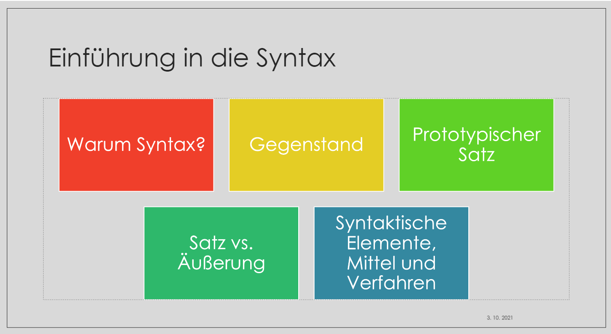

Phonologie 2021/2022
2021-10-06
Kapitel 1 Einführung

In diesem Einführungskurs machen wir Sie mit grundlegenden Methoden zur Erfassung von linguistischen, insbesondere aber syntaktischen Merkmalen in deutschen und slowenischen Texten bekannt.
Unseren Kurs beginnen wir mit Frage, wozu wir überhaupt über Sprache reden und zu welchem Zweck über Syntax?
Da sich mehrere Wissenschaften mit Sprache auseinandersetzen, ist es sinnvoll, Syntax von anderen wissenschaftlichen Disziplinen abzugrenzen, um den Gegenstand der Syntax (als Bestandteil der Systemlinguistik) besser erkennen zu können.
In jeder wissenschaftlichen Disziplin werden grundlegende Einheiten definiert. In der Syntax ist der Satz die maßgebliche Basiseinheit. Wie jede linguistische Einheit, kann man Sätze verschiedentlich definieren. Im Rahmen der Einführungsstunde wird ein prototypischer Satz definiert. Von der syntaktischen Einheit Satz ist die kommunikative Einheit Äußerung zu unterscheiden.
Andere Themen im Verlauf der Einführung in die deutsche Syntax sind syntaktische Elemente, syntaktische Mittel und Verfahren zur Ermittlung syntaktischer Einheiten wie etwa der Satztypen, Satzglieder und Attribute.1